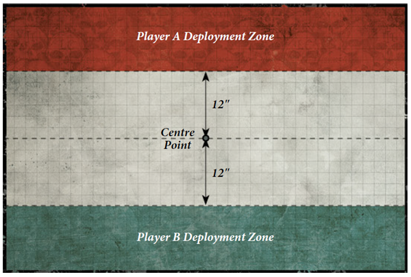
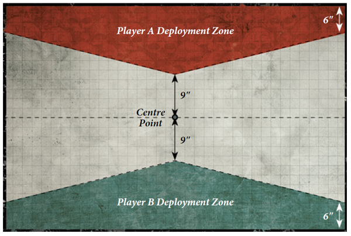
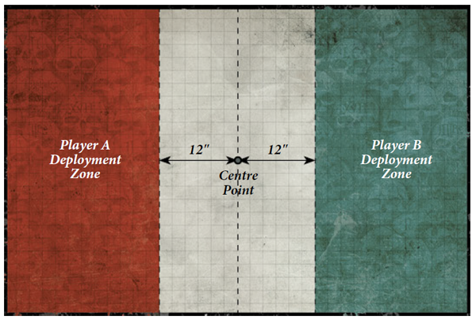
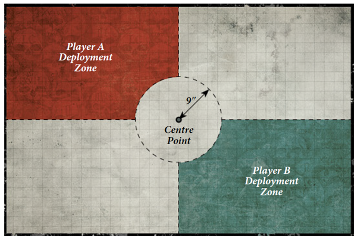
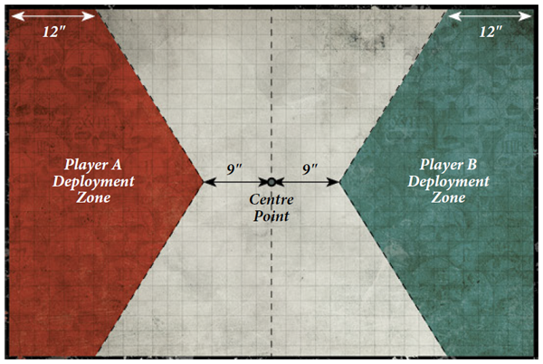
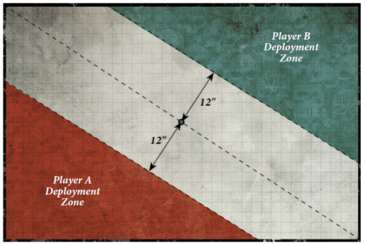
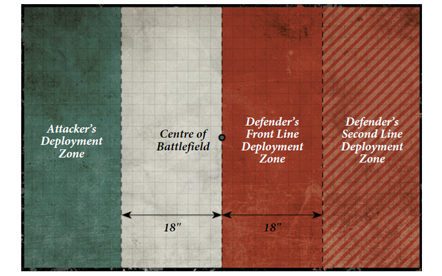

Tarsus IV
Uzion
Ilias
Tamarak Rdg
Salt Flats
Hive Rasmus
Hive Tarson
Fuller Gap
Hive Sorrel
OP Rogain
Hive Aepen
back
A rising Imperial planet in the Solatarius system, Tarsus IV's hive cities have grown rapidly in the past centuries. Industry rapidly overtakes the desert wastelands. Rich Houses grow complacent and fat on excess. Chaos plots and sinister deals with xenos writhe just beneath the surface.
Tamarak Ridge is a natural formation. Its significant elevation gives an occupying force's sensor arrays commanding vision for thousands of kilometers.
The Salt Flats are the location of one of Tarsus IV's most prominent military development facilities. This is the base of production for the Tarsus Defense Force's armament as well as various heavy industrial machinery for the planet.
Special Rules: "Battlezone: Industrial World"
Hive Rasmus is one of the planet's smaller hive city. Its underhive still overflows with the children of Hive Aepen refugees from the uprising generations ago. Underhive gangers practically run he city and the Adeptus Arbites can do naught but perform token acts of policing as their requests for support from Hive Tarson fall on deaf ears.
Special Rules: "Cities of Death: Infestation"
Hive Tarson is the largest and capital city on Tarsus IV. The upper classes live in the high towers, insulated and out of touch with the growing turmoil. The underhive, however, is alive with crime ranging from petty theft to daemonic cults.
Special Rules: "Cities of Death"
The gap is a critical point for commerce across the vast equatorial desert. Nearly every trade route between hemispheres runs through this location. An army occupying this location will have a vice grip on the logistics of Tarsus IV.
Sorrel is the second largest hive city on Tarsus IV. Its status is almost identical to Hive Tarson, but rife with corporate corruption rather than political.
Special Rules: "Cities of Death"
Rogain is the largest military base on the planet. Home to the Tarsus Defense Force, it sports impressive defensive design. Design learned through nearly a century of rebellion 400 years ago.
Here lie the abandoned ruins of Hive Aepen, torn apart by a rebel uprising 400 years ago. It became home to the underbelly of Tarsus IV, a hiding place for renegades and heretics.
Special Rules: "Cities of Death: Pollution"
OP Ziggy
OP Garia
Uzon City
Port Trep
Paramarsh
The Burrow
Atlas Base
The Depths
back
Deadly jungle covers the surface of Uzion. Lithe jungle creatures, giant insectoids, and massive predatory birds tear apart Imperial subjects that dare to venture into its heart. Millions of poisonous plants and animals, sweltering heat, and lack of fresh water make for a doubley punishing environment. For almost six centuries Uzion has raised regiment after regiment of Imperial Guardsmen, fulfilling their tithe with men and women born and bred in a world saturated with death.
Tamarak Ridge is a natural formation. Its significant elevation gives an occupying force's sensor arrays commanding vision for thousands of kilometers.
The Salt Flats are the location of one of Tarsus IV's most prominent military development facilities. This is the base of production for the Tarsus Defense Force's armament as well as various heavy industrial machinery for the planet.
Special Rules: "Battlezone: Industrial World"
Hive Rasmus is one of the planet's smaller hive city. Its underhive still overflows with the children of Hive Aepen refugees from the uprising generations ago. Underhive gangers practically run he city and the Adeptus Arbites can do naught but perform token acts of policing as their requests for support from Hive Tarson fall on deaf ears.
Special Rules: "Cities of Death: Infestation"
Hive Tarson is the largest and capital city on Tarsus IV. The upper classes live in the high towers, insulated and out of touch with the growing turmoil. The underhive, however, is alive with crime ranging from petty theft to daemonic cults.
Special Rules: "Cities of Death"
The gap is a critical point for commerce across the vast equatorial desert. Nearly every trade route between hemispheres runs through this location. An army occupying this location will have a vice grip on the logistics of Tarsus IV.
Sorrel is the second largest hive city on Tarsus IV. Its status is almost identical to Hive Tarson, but rife with corporate corruption rather than political.
Special Rules: "Cities of Death"
Rogain is the largest military base on the planet. Home to the Tarsus Defense Force, it sports impressive defensive design. Design learned through nearly a century of rebellion 400 years ago.
Here lie the abandoned ruins of Hive Aepen, torn apart by a rebel uprising 400 years ago. It became home to the underbelly of Tarsus IV, a hiding place for renegades and heretics.
Special Rules: "Cities of Death: Pollution"
Complex 12
Astor Base
Midlothian
Data Center
Port Olander
Complex 08
Ilias Proper
Tallas
back
The barren planet of Ilias has long served the Imperium. Adeptus Mechanicus forges manufacture warp engines for the Imperial navy, casting sacred rituals to appease the engine's fickle machine spirits. Ilias's secondary role is as the fiefdom for the oldest Knight House in the sector: the Titan Legio Solitarum I. These massive manufactoriums have fueled the devastating and incredible weaponry of Imperial Knights for millenia.
Tamarak Ridge is a natural formation. Its significant elevation gives an occupying force's sensor arrays commanding vision for thousands of kilometers.
The Salt Flats are the location of one of Tarsus IV's most prominent military development facilities. This is the base of production for the Tarsus Defense Force's armament as well as various heavy industrial machinery for the planet.
Special Rules: "Battlezone: Industrial World"
Hive Rasmus is one of the planet's smaller hive city. Its underhive still overflows with the children of Hive Aepen refugees from the uprising generations ago. Underhive gangers practically run he city and the Adeptus Arbites can do naught but perform token acts of policing as their requests for support from Hive Tarson fall on deaf ears.
Special Rules: "Cities of Death: Infestation"
Hive Tarson is the largest and capital city on Tarsus IV. The upper classes live in the high towers, insulated and out of touch with the growing turmoil. The underhive, however, is alive with crime ranging from petty theft to daemonic cults.
Special Rules: "Cities of Death"
The gap is a critical point for commerce across the vast equatorial desert. Nearly every trade route between hemispheres runs through this location. An army occupying this location will have a vice grip on the logistics of Tarsus IV.
Sorrel is the second largest hive city on Tarsus IV. Its status is almost identical to Hive Tarson, but rife with corporate corruption rather than political.
Special Rules: "Cities of Death"
Rogain is the largest military base on the planet. Home to the Tarsus Defense Force, it sports impressive defensive design. Design learned through nearly a century of rebellion 400 years ago.
Here lie the abandoned ruins of Hive Aepen, torn apart by a rebel uprising 400 years ago. It became home to the underbelly of Tarsus IV, a hiding place for renegades and heretics.
Special Rules: "Cities of Death: Pollution"